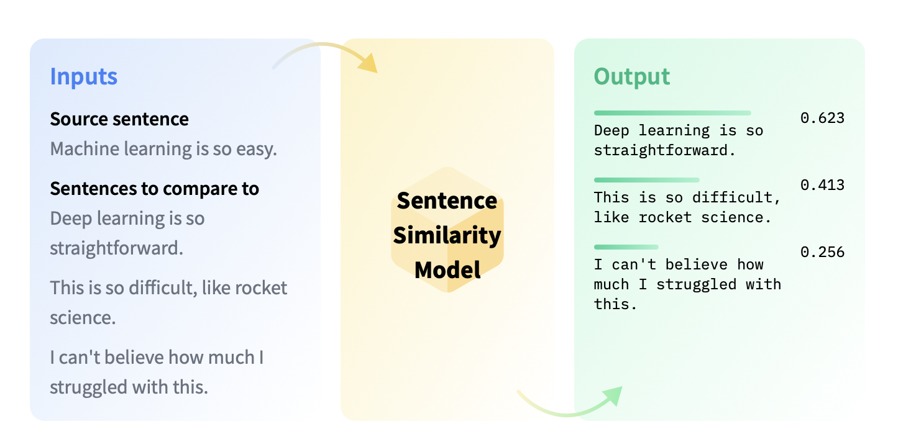
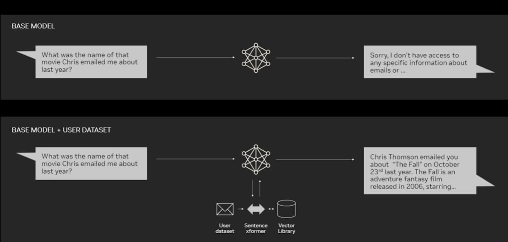

Semantic Search for texts#
To enable searching over a large collection of texts, we can frame it as a task of Sentence Similarity.
Sentence Similarity is the task of determining how similar two texts are. Sentence similarity models convert input texts into vectors (embeddings) that capture semantic information and calculate how close (similar) they are between them. This task is particularly useful for information retrieval and clustering/grouping.

What happens underneath? Obtaining embeddings

Obtaining the closest observations in the vector space
We now have two numerical representations of texts (embeddings): our original text database and our query (here, the description of a python function). Our goal: get the texts in the database that have the closest meaning to our query.

Application: Retrieval-Augmented Generation (RAG)#
As we saw in the previous session, the context of a LLM is limited (tipically a few thousand tokens), so we if we want to introduce external knowledge (for example, internal documentation from our company), all the information is not gonna fit in the context.
Thus, we can combine the power of a LLM with a semantic search engine to retrieve the most relevant information from a large collection of texts. This is what is called Retrieval-Augmented Generation.
Here is a pair of diagrams of this process:


Why RAG?#
LLMs offer a natural language interface between humans and data. Widely available models come pre-trained on huge amounts of publicly available data like Wikipedia, mailing lists, textbooks, source code and more.
However, while LLMs are trained on a great deal of data, they are not trained on your data, which may be private or specific to the problem you’re trying to solve. It’s behind APIs, in SQL databases, or trapped in PDFs and slide decks.
You may choose to fine-tune a LLM with your data, but:
Training an LLM is expensive.
Due to the cost to train, it’s hard to update a LLM with latest information.
Observability is lacking. When you ask a LLM a question, it’s not obvious how the LLM arrived at its answer.
Instead of fine-tuning, one can do context augmentation pattern called Retrieval-Augmented Generation (RAG) to obtain more accurate text generation relevant to your specific data. RAG involves the following high level steps:
Retrieve information from your data sources first,
Add it to your question as context, and
Ask the LLM to answer based on the enriched prompt.
In doing so, RAG overcomes all three weaknesses of the fine-tuning approach:
There’s no training involved, so it’s cheap.
Data is fetched only when you ask for them, so it’s always up to date.
It can show you the retrieved documents, so it’s more trustworthy.
Stages within RAG#
There are five key stages within RAG, which in turn will be a part of any larger application you build. These are:
Loading: this refers to getting your data from where it lives – whether it’s text files, PDFs, another website, a database, or an API – into your pipeline. LlamaHub provides hundreds of connectors to choose from.
Indexing: this means creating a data structure that allows for querying the data. For LLMs this nearly always means creating vector embeddings, numerical representations of the meaning of your data, as well as numerous other metadata strategies to make it easy to accurately find contextually relevant data.
Storing: once your data is indexed you will almost always want to store your index, as well as other metadata, to avoid having to re-index it.
Querying: for any given indexing strategy there are many ways you can utilize LLMs and LlamaIndex data structures to query, including sub-queries, multi-step queries and hybrid strategies.
Evaluation: a critical step in any pipeline is checking how effective it is relative to other strategies, or when you make changes. Evaluation provides objective measures of how accurate, faithful and fast your responses to queries are.

Libraries#
Though we could build our own RAG application from scratch (by using the transformers library or the OpenAI API), it is such a popular application that a lot of wrappers already exist, to simplify our job.
The most popular library for RAG is LlamaIndex, which is compatible with all the LLM providers (HuggingFace, OpenAI, Anthropic etc)
https://docs.llamaindex.ai/en/stable/
#!pip install llama-index
For the moment, we use the OpenAI models for our RAG examples, so let’s load the API key:
import os
os.environ["OPENAI_API_KEY"] = "sk-..."
Example 1 - Chat with a book#
Let’s first develop an example of how we can use RAG to answer queries about any book. In this case, it’s gonna be:

A friend has shared with us the actual book in txt format, located at data/J. K. Rowling - Harry Potter 1 - Sorcerer's Stone.txt. Let’s load it and see how we can use RAG to answer questions about it.
Load data and build an index#
from llama_index.core import VectorStoreIndex, SimpleDirectoryReader
documents = SimpleDirectoryReader("data").load_data()
index = VectorStoreIndex.from_documents(documents)
This builds an index over the documents in the data folder (which in this case just consists of the book text, but could contain many documents).
Your directory structure should look like this:
├── notebook or python script
└── data
└── document1
└── document2
└── ...
Query your data#
This creates an engine for Q&A over your index and asks a simple question.
query_engine = index.as_query_engine()
response = query_engine.query("On which date did Harry start classes at Hogwarts?")
print(response)
Harry started classes at Hogwarts on Thursday.
query_engine = index.as_query_engine()
response = query_engine.query("Generate a list of the books required for first year students at Hogwarts. Use bullet points.")
print(response)
- List of necessary books and equipment for first-year students at Hogwarts:
- The Standard Book of Spells (Grade 1) by Miranda Goshawk
- A History of Magic by Bathilda Bagshot
- Magical Theory by Adalbert Waffling
- A Beginner's Guide to Transfiguration by Emeric Switch
- One Thousand Magical Herbs and Fungi by Phyllida Spore
- Magical Drafts and Potions by Arsenius Jigger
- Fantastic Beasts and Where to Find Them by Newt Scamander
- The Dark Forces: A Guide to Self-Protection by Quentin Trimble
query_engine = index.as_query_engine()
response = query_engine.query("How many points is the Golden Snitch worth in a game of Quidditch?")
print(response)
The Golden Snitch is worth an extra hundred and fifty points in a game of Quidditch.
query_engine = index.as_query_engine()
response = query_engine.query("How many points did the Gryffindor house achieved at the end of the first year?")
print(response)
Gryffindor house achieved a total of four hundred and seventy-two points at the end of the first year.
Storing your index#
By default, the data you just loaded is stored in memory as a series of vector embeddings. You can save time (and requests to OpenAI) by saving the embeddings to disk. That can be done with this line:
index.storage_context.persist()
Of course, you don’t get the benefits of persisting unless you load the data. So let’s modify the code to generate and store the index if it doesn’t exist, but load it if it does:
import os.path
from llama_index.core import (
VectorStoreIndex,
SimpleDirectoryReader,
StorageContext,
load_index_from_storage,
)
# check if storage already exists
PERSIST_DIR = "./storage"
if not os.path.exists(PERSIST_DIR):
# load the documents and create the index
documents = SimpleDirectoryReader("data").load_data()
index = VectorStoreIndex.from_documents(documents)
# store it for later
index.storage_context.persist(persist_dir=PERSIST_DIR)
else:
# load the existing index
storage_context = StorageContext.from_defaults(persist_dir=PERSIST_DIR)
index = load_index_from_storage(storage_context)
query_engine = index.as_query_engine()
response = query_engine.query("How does Harry first learn that he is a wizard?")
print(response)
Harry first learns that he is a wizard when Hagrid arrives to deliver his acceptance letter to Hogwarts School of Witchcraft and Wizardry.
Debugging#
To see what’s happening under the hood, you can set the logging level to DEBUG:
import logging
import sys
logging.basicConfig(stream=sys.stdout, level=logging.DEBUG)
logging.getLogger().addHandler(logging.StreamHandler(stream=sys.stdout))
response = query_engine.query("How does Harry first learn that he is a wizard?")
print(response)
DEBUG:openai._base_client:Request options: {'method': 'post', 'url': '/embeddings', 'files': None, 'post_parser': <function Embeddings.create.<locals>.parser at 0x31be1b130>, 'json_data': {'input': ['How does Harry first learn that he is a wizard?'], 'model': 'text-embedding-ada-002', 'encoding_format': 'base64'}}
Request options: {'method': 'post', 'url': '/embeddings', 'files': None, 'post_parser': <function Embeddings.create.<locals>.parser at 0x31be1b130>, 'json_data': {'input': ['How does Harry first learn that he is a wizard?'], 'model': 'text-embedding-ada-002', 'encoding_format': 'base64'}}
DEBUG:httpcore.connection:close.started
close.started
DEBUG:httpcore.connection:close.complete
close.complete
DEBUG:httpcore.connection:connect_tcp.started host='api.openai.com' port=443 local_address=None timeout=60.0 socket_options=None
connect_tcp.started host='api.openai.com' port=443 local_address=None timeout=60.0 socket_options=None
DEBUG:httpcore.connection:connect_tcp.complete return_value=<httpcore._backends.sync.SyncStream object at 0x3183a37c0>
connect_tcp.complete return_value=<httpcore._backends.sync.SyncStream object at 0x3183a37c0>
DEBUG:httpcore.connection:start_tls.started ssl_context=<ssl.SSLContext object at 0x3183e7d40> server_hostname='api.openai.com' timeout=60.0
start_tls.started ssl_context=<ssl.SSLContext object at 0x3183e7d40> server_hostname='api.openai.com' timeout=60.0
DEBUG:httpcore.connection:start_tls.complete return_value=<httpcore._backends.sync.SyncStream object at 0x17f932b00>
start_tls.complete return_value=<httpcore._backends.sync.SyncStream object at 0x17f932b00>
DEBUG:httpcore.http11:send_request_headers.started request=<Request [b'POST']>
send_request_headers.started request=<Request [b'POST']>
DEBUG:httpcore.http11:send_request_headers.complete
send_request_headers.complete
DEBUG:httpcore.http11:send_request_body.started request=<Request [b'POST']>
send_request_body.started request=<Request [b'POST']>
DEBUG:httpcore.http11:send_request_body.complete
send_request_body.complete
DEBUG:httpcore.http11:receive_response_headers.started request=<Request [b'POST']>
receive_response_headers.started request=<Request [b'POST']>
DEBUG:httpcore.http11:receive_response_headers.complete return_value=(b'HTTP/1.1', 200, b'OK', [(b'Date', b'Fri, 05 Apr 2024 10:12:25 GMT'), (b'Content-Type', b'application/json'), (b'Transfer-Encoding', b'chunked'), (b'Connection', b'keep-alive'), (b'access-control-allow-origin', b'*'), (b'openai-model', b'text-embedding-ada-002'), (b'openai-organization', b'victor-xbwupa'), (b'openai-processing-ms', b'22'), (b'openai-version', b'2020-10-01'), (b'strict-transport-security', b'max-age=15724800; includeSubDomains'), (b'x-ratelimit-limit-requests', b'10000'), (b'x-ratelimit-limit-tokens', b'5000000'), (b'x-ratelimit-remaining-requests', b'9999'), (b'x-ratelimit-remaining-tokens', b'4999988'), (b'x-ratelimit-reset-requests', b'6ms'), (b'x-ratelimit-reset-tokens', b'0s'), (b'x-request-id', b'req_69f1b32343d39530ebf63f785c3d17ea'), (b'CF-Cache-Status', b'DYNAMIC'), (b'Set-Cookie', b'__cf_bm=rBh3YkjPAuxqi13f0pKxc6HF.NtAGlarschG9Ts3FcI-1712311945-1.0.1.1-XtT.wloo1_9U5hS4daJUG07lFhp9uOglBHA9hgNbo6T6eb.GNgzvpc_feHXOsXtZEqXbgCLaduCj.SZweosemA; path=/; expires=Fri, 05-Apr-24 10:42:25 GMT; domain=.api.openai.com; HttpOnly; Secure; SameSite=None'), (b'Set-Cookie', b'_cfuvid=bQsWP5Dlrcui1L0dcDYRKu5vFsfU2ZP5KiLWX9p0L4o-1712311945306-0.0.1.1-604800000; path=/; domain=.api.openai.com; HttpOnly; Secure; SameSite=None'), (b'Server', b'cloudflare'), (b'CF-RAY', b'86f8c278fd8786bd-MAD'), (b'Content-Encoding', b'br'), (b'alt-svc', b'h3=":443"; ma=86400')])
receive_response_headers.complete return_value=(b'HTTP/1.1', 200, b'OK', [(b'Date', b'Fri, 05 Apr 2024 10:12:25 GMT'), (b'Content-Type', b'application/json'), (b'Transfer-Encoding', b'chunked'), (b'Connection', b'keep-alive'), (b'access-control-allow-origin', b'*'), (b'openai-model', b'text-embedding-ada-002'), (b'openai-organization', b'victor-xbwupa'), (b'openai-processing-ms', b'22'), (b'openai-version', b'2020-10-01'), (b'strict-transport-security', b'max-age=15724800; includeSubDomains'), (b'x-ratelimit-limit-requests', b'10000'), (b'x-ratelimit-limit-tokens', b'5000000'), (b'x-ratelimit-remaining-requests', b'9999'), (b'x-ratelimit-remaining-tokens', b'4999988'), (b'x-ratelimit-reset-requests', b'6ms'), (b'x-ratelimit-reset-tokens', b'0s'), (b'x-request-id', b'req_69f1b32343d39530ebf63f785c3d17ea'), (b'CF-Cache-Status', b'DYNAMIC'), (b'Set-Cookie', b'__cf_bm=rBh3YkjPAuxqi13f0pKxc6HF.NtAGlarschG9Ts3FcI-1712311945-1.0.1.1-XtT.wloo1_9U5hS4daJUG07lFhp9uOglBHA9hgNbo6T6eb.GNgzvpc_feHXOsXtZEqXbgCLaduCj.SZweosemA; path=/; expires=Fri, 05-Apr-24 10:42:25 GMT; domain=.api.openai.com; HttpOnly; Secure; SameSite=None'), (b'Set-Cookie', b'_cfuvid=bQsWP5Dlrcui1L0dcDYRKu5vFsfU2ZP5KiLWX9p0L4o-1712311945306-0.0.1.1-604800000; path=/; domain=.api.openai.com; HttpOnly; Secure; SameSite=None'), (b'Server', b'cloudflare'), (b'CF-RAY', b'86f8c278fd8786bd-MAD'), (b'Content-Encoding', b'br'), (b'alt-svc', b'h3=":443"; ma=86400')])
INFO:httpx:HTTP Request: POST https://api.openai.com/v1/embeddings "HTTP/1.1 200 OK"
HTTP Request: POST https://api.openai.com/v1/embeddings "HTTP/1.1 200 OK"
DEBUG:httpcore.http11:receive_response_body.started request=<Request [b'POST']>
receive_response_body.started request=<Request [b'POST']>
DEBUG:httpcore.http11:receive_response_body.complete
receive_response_body.complete
DEBUG:httpcore.http11:response_closed.started
response_closed.started
DEBUG:httpcore.http11:response_closed.complete
response_closed.complete
DEBUG:openai._base_client:HTTP Request: POST https://api.openai.com/v1/embeddings "200 OK"
HTTP Request: POST https://api.openai.com/v1/embeddings "200 OK"
DEBUG:llama_index.core.indices.utils:> Top 2 nodes:
> [Node ba4fc574-7b71-4c08-8c7b-6272711de372] [Similarity score: 0.869456] He pulled out the letter and read:
HOGWARTS SCHOOL of WITCHCRAFT and WIZARDRY
Headmaster: ALBUS...
> [Node 189248fc-56c8-4a01-b586-9eecfef9b338] [Similarity score: 0.864436] He seemed to think he'd said too much, because he
went back to staring out of the window.
Harry ...
> Top 2 nodes:
> [Node ba4fc574-7b71-4c08-8c7b-6272711de372] [Similarity score: 0.869456] He pulled out the letter and read:
HOGWARTS SCHOOL of WITCHCRAFT and WIZARDRY
Headmaster: ALBUS...
> [Node 189248fc-56c8-4a01-b586-9eecfef9b338] [Similarity score: 0.864436] He seemed to think he'd said too much, because he
went back to staring out of the window.
Harry ...
DEBUG:openai._base_client:Request options: {'method': 'post', 'url': '/chat/completions', 'files': None, 'json_data': {'messages': [{'role': 'system', 'content': "You are an expert Q&A system that is trusted around the world.\nAlways answer the query using the provided context information, and not prior knowledge.\nSome rules to follow:\n1. Never directly reference the given context in your answer.\n2. Avoid statements like 'Based on the context, ...' or 'The context information ...' or anything along those lines."}, {'role': 'user', 'content': 'Context information is below.\n---------------------\nfile_path: /Users/victorgallego/curso_ML_IE/s24_retrieval_augmented_generation/data/J. K. Rowling - Harry Potter 1 - Sorcerer\'s Stone.txt\n\nHe pulled out the letter and read:\n\nHOGWARTS SCHOOL of WITCHCRAFT and WIZARDRY\n\nHeadmaster: ALBUS DUMBLEDORE\n\n(Order of Merlin, First Class, Grand Sorc., Chf. Warlock, Supreme\nMugwump, International Confed. of Wizards)\n\nDear Mr. Potter,\n\nWe are pleased to inform you that you have been accepted at Hogwarts\nSchool of Witchcraft and Wizardry. Please find enclosed a list of all\nnecessary books and equipment.\n\nTerm begins on September 1. We await your owl by no later than July 31.\nYours sincerely,\n\nMinerva McGonagall,\n\nDeputy Headmistress\n\nQuestions exploded inside Harry\'s head like fireworks and he couldn\'t\ndecide which to ask first. After a few minutes he stammered, "What does\nit mean, they await my owl?"\n\n"Gallopin\' Gorgons, that reminds me," said Hagrid, clapping a hand to\nhis forehead with enough force to knock over a cart horse, and from yet\nanother pocket inside his overcoat he pulled an owl -- a real, live,\nrather ruffled-looking owl -- a long quill, and a roll of parchment.\nWith his tongue between his teeth he scribbled a note that Harry could\nread upside down:\n\nDear Professor Dumbledore,\n\nGiven Harry his letter.\n\nTaking him to buy his things tomorrow.\n\nWeather\'s horrible. Hope you\'re Well.\n\nHagrid\n\nHagrid rolled up the note, gave it to the owl, which clamped it in its\nbeak, went to the door, and threw the owl out into the storm. Then he\ncame back and sat down as though this was as normal as talking on the\ntelephone.\n\nHarry realized his mouth was open and closed it quickly.\n\n"Where was I?" said Hagrid, but at that moment, Uncle Vernon, still\nashen-faced but looking very angry, moved into the firelight.\n\n"He\'s not going," he said.\n\nHagrid grunted.\n\n"I\'d like ter see a great Muggle like you stop him," he said.\n\n"A what?" said Harry, interested.\n\n"A Muggle," said Hagrid, "it\'s what we call nonmagic folk like thern.\nAn\' it\'s your bad luck you grew up in a family o\' the biggest Muggles I\never laid eyes on."\n\n"We swore when we took him in we\'d put a stop to that rubbish," said\nUncle Vernon, "swore we\'d stamp it out of him! Wizard indeed!"\n\n"You knew?" said Harry. "You knew I\'m a -- a wizard?"\n\n"Knew!" shrieked Aunt Petunia suddenly. "Knew! Of course we knew! How\ncould you not be, my dratted sister being what she was? Oh, she got a\nletter just like that and disappeared off to that-that school-and came\nhome every vacation with her pockets full of frog spawn, turning teacups\ninto rats. I was the only one who saw her for what she was -- a freak!\nBut for my mother and father, oh no, it was Lily this and Lily that,\nthey were proud of having a witch in the family!"\n\nShe stopped to draw a deep breath and then went ranting on. It seemed\nshe had been wanting to say all this for years.\n\n"Then she met that Potter at school and they left and got married and\nhad you, and of course I knew you\'d be just the same, just as strange,\njust as -- as -- abnormal -- and then, if you please, she went and got\nherself blown up and we got landed with you!"\n\nHarry had gone very white. As soon as he found his voice he said, "Blown\nup? You told me they died in a car crash!"\n\n"CAR CRASH!" roared Hagrid, jumping up so angrily that the Dursleys\nscuttled back to their corner. "How could a car crash kill Lily an\'\nJames Potter? It\'s an outrage! A scandal! Harry Potter not knowin\' his\nown story when every kid in our world knows his name!" "But why? What\nhappened?" Harry asked urgently.\n\nThe anger faded from Hagrid\'s face. He looked suddenly anxious.\n\n"I never expected this," he said, in a low, worried voice. "I had no\nidea, when Dumbledore told me there might be trouble gettin\' hold of\nyeh, how much yeh didn\'t know.\n\nfile_path: /Users/victorgallego/curso_ML_IE/s24_retrieval_augmented_generation/data/J. K. Rowling - Harry Potter 1 - Sorcerer\'s Stone.txt\n\nHe seemed to think he\'d said too much, because he\nwent back to staring out of the window.\n\nHarry didn\'t think there was anything wrong with not being able to\nafford an owl. After all, he\'d never had any money in his life until a\nmonth ago, and he told Ron so, all about having to wear Dudley\'s old\nclothes and never getting proper birthday presents. This seemed to cheer\nRon up.\n\n"... and until Hagrid told me, I didn\'t know anything about be ing a\nwizard or about my parents or Voldemort"\n\nRon gasped.\n\n"What?" said Harry.\n\n"You said You-Know-Who\'s name!" said Ron, sounding both shocked and\nimpressed. "I\'d have thought you, of all people --"\n\n"I\'m not trying to be brave or anything, saying the name," said Harry, I\njust never knew you shouldn\'t. See what I mean? I\'ve got loads to\nlearn.... I bet," he added, voicing for the first time something that\nhad been worrying him a lot lately, "I bet I\'m the worst in the class."\n\n"You won\'t be. There\'s loads of people who come from Muggle families and\nthey learn quick enough."\n\nWhile they had been talking, the train had carried them out of London.\nNow they were speeding past fields full of cows and sheep. They were\nquiet for a time, watching the fields and lanes flick past.\n\nAround half past twelve there was a great clattering outside in the\ncorridor and a smiling, dimpled woman slid back their door and said,\n"Anything off the cart, dears?"\n\nHarry, who hadn\'t had any breakfast, leapt to his feet, but Ron\'s ears\nwent pink again and he muttered that he\'d brought sandwiches. Harry went\nout into the corridor.\n\nHe had never had any money for candy with the Dursleys, and now that he\nhad pockets rattling with gold and silver he was ready to buy as many\nMars Bars as he could carry -- but the woman didn\'t have Mars Bars. What\nshe did have were Bettie Bott\'s Every Flavor Beans, Drooble\'s Best\nBlowing Gum, Chocolate Frogs. Pumpkin Pasties, Cauldron Cakes, Licorice\nWands, and a number of other strange things Harry had never seen in his\nlife. Not wanting to miss anything, he got some of everything and paid\nthe woman eleven silver Sickles and seven bronze Knuts.\n\nRon stared as Harry brought it all back in to the compartment and tipped\nit onto an empty seat.\n\n"Hungry, are you?"\n\n"Starving," said Harry, taking a large bite out of a pumpkin pasty.\n\nRon had taken out a lumpy package and unwrapped it. There were four\nsandwiches inside. He pulled one of them apart and said, "She always\nforgets I don\'t like corned beef."\n\n"Swap you for one of these," said Harry, holding up a pasty. "Go on --"\n\n"You don\'t want this, it\'s all dry," said Ron. "She hasn\'t got much\ntime," he added quickly, "you know, with five of us."\n\n"Go on, have a pasty," said Harry, who had never had anything to share\nbefore or, indeed, anyone to share it with. It was a nice feeling,\nsitting there with Ron, eating their way through all Harry\'s pasties,\ncakes, and candies (the sandwiches lay forgotten).\n\n"What are these?" Harry asked Ron, holding up a pack of Chocolate Frogs.\n"They\'re not really frogs, are they?" He was starting to feel that\nnothing would surprise him.\n\n"No," said Ron. "But see what the card is. I\'m missing Agrippa."\n\n"What?"\n\n"Oh, of course, you wouldn\'t know -- Chocolate Frogs have cards, inside\nthem, you know, to collect -- famous witches and wizards. I\'ve got about\nfive hundred, but I haven\'t got Agrippa or Ptolemy."\n\nHarry unwrapped his Chocolate Frog and picked up the card. It showed a\nman\'s face. He wore half- moon glasses, had a long, crooked nose, and\nflowing silver hair, beard, and mustache. Underneath the picture was the\nname Albus Dumbledore.\n\n"So this is Dumbledore!" said Harry.\n\n"Don\'t tell me you\'d never heard of Dumbledore!" said Ron. "Can I have a\nfrog?\n---------------------\nGiven the context information and not prior knowledge, answer the query.\nQuery: How does Harry first learn that he is a wizard?\nAnswer: '}], 'model': 'gpt-3.5-turbo', 'stream': False, 'temperature': 0.1}}
Request options: {'method': 'post', 'url': '/chat/completions', 'files': None, 'json_data': {'messages': [{'role': 'system', 'content': "You are an expert Q&A system that is trusted around the world.\nAlways answer the query using the provided context information, and not prior knowledge.\nSome rules to follow:\n1. Never directly reference the given context in your answer.\n2. Avoid statements like 'Based on the context, ...' or 'The context information ...' or anything along those lines."}, {'role': 'user', 'content': 'Context information is below.\n---------------------\nfile_path: /Users/victorgallego/curso_ML_IE/s24_retrieval_augmented_generation/data/J. K. Rowling - Harry Potter 1 - Sorcerer\'s Stone.txt\n\nHe pulled out the letter and read:\n\nHOGWARTS SCHOOL of WITCHCRAFT and WIZARDRY\n\nHeadmaster: ALBUS DUMBLEDORE\n\n(Order of Merlin, First Class, Grand Sorc., Chf. Warlock, Supreme\nMugwump, International Confed. of Wizards)\n\nDear Mr. Potter,\n\nWe are pleased to inform you that you have been accepted at Hogwarts\nSchool of Witchcraft and Wizardry. Please find enclosed a list of all\nnecessary books and equipment.\n\nTerm begins on September 1. We await your owl by no later than July 31.\nYours sincerely,\n\nMinerva McGonagall,\n\nDeputy Headmistress\n\nQuestions exploded inside Harry\'s head like fireworks and he couldn\'t\ndecide which to ask first. After a few minutes he stammered, "What does\nit mean, they await my owl?"\n\n"Gallopin\' Gorgons, that reminds me," said Hagrid, clapping a hand to\nhis forehead with enough force to knock over a cart horse, and from yet\nanother pocket inside his overcoat he pulled an owl -- a real, live,\nrather ruffled-looking owl -- a long quill, and a roll of parchment.\nWith his tongue between his teeth he scribbled a note that Harry could\nread upside down:\n\nDear Professor Dumbledore,\n\nGiven Harry his letter.\n\nTaking him to buy his things tomorrow.\n\nWeather\'s horrible. Hope you\'re Well.\n\nHagrid\n\nHagrid rolled up the note, gave it to the owl, which clamped it in its\nbeak, went to the door, and threw the owl out into the storm. Then he\ncame back and sat down as though this was as normal as talking on the\ntelephone.\n\nHarry realized his mouth was open and closed it quickly.\n\n"Where was I?" said Hagrid, but at that moment, Uncle Vernon, still\nashen-faced but looking very angry, moved into the firelight.\n\n"He\'s not going," he said.\n\nHagrid grunted.\n\n"I\'d like ter see a great Muggle like you stop him," he said.\n\n"A what?" said Harry, interested.\n\n"A Muggle," said Hagrid, "it\'s what we call nonmagic folk like thern.\nAn\' it\'s your bad luck you grew up in a family o\' the biggest Muggles I\never laid eyes on."\n\n"We swore when we took him in we\'d put a stop to that rubbish," said\nUncle Vernon, "swore we\'d stamp it out of him! Wizard indeed!"\n\n"You knew?" said Harry. "You knew I\'m a -- a wizard?"\n\n"Knew!" shrieked Aunt Petunia suddenly. "Knew! Of course we knew! How\ncould you not be, my dratted sister being what she was? Oh, she got a\nletter just like that and disappeared off to that-that school-and came\nhome every vacation with her pockets full of frog spawn, turning teacups\ninto rats. I was the only one who saw her for what she was -- a freak!\nBut for my mother and father, oh no, it was Lily this and Lily that,\nthey were proud of having a witch in the family!"\n\nShe stopped to draw a deep breath and then went ranting on. It seemed\nshe had been wanting to say all this for years.\n\n"Then she met that Potter at school and they left and got married and\nhad you, and of course I knew you\'d be just the same, just as strange,\njust as -- as -- abnormal -- and then, if you please, she went and got\nherself blown up and we got landed with you!"\n\nHarry had gone very white. As soon as he found his voice he said, "Blown\nup? You told me they died in a car crash!"\n\n"CAR CRASH!" roared Hagrid, jumping up so angrily that the Dursleys\nscuttled back to their corner. "How could a car crash kill Lily an\'\nJames Potter? It\'s an outrage! A scandal! Harry Potter not knowin\' his\nown story when every kid in our world knows his name!" "But why? What\nhappened?" Harry asked urgently.\n\nThe anger faded from Hagrid\'s face. He looked suddenly anxious.\n\n"I never expected this," he said, in a low, worried voice. "I had no\nidea, when Dumbledore told me there might be trouble gettin\' hold of\nyeh, how much yeh didn\'t know.\n\nfile_path: /Users/victorgallego/curso_ML_IE/s24_retrieval_augmented_generation/data/J. K. Rowling - Harry Potter 1 - Sorcerer\'s Stone.txt\n\nHe seemed to think he\'d said too much, because he\nwent back to staring out of the window.\n\nHarry didn\'t think there was anything wrong with not being able to\nafford an owl. After all, he\'d never had any money in his life until a\nmonth ago, and he told Ron so, all about having to wear Dudley\'s old\nclothes and never getting proper birthday presents. This seemed to cheer\nRon up.\n\n"... and until Hagrid told me, I didn\'t know anything about be ing a\nwizard or about my parents or Voldemort"\n\nRon gasped.\n\n"What?" said Harry.\n\n"You said You-Know-Who\'s name!" said Ron, sounding both shocked and\nimpressed. "I\'d have thought you, of all people --"\n\n"I\'m not trying to be brave or anything, saying the name," said Harry, I\njust never knew you shouldn\'t. See what I mean? I\'ve got loads to\nlearn.... I bet," he added, voicing for the first time something that\nhad been worrying him a lot lately, "I bet I\'m the worst in the class."\n\n"You won\'t be. There\'s loads of people who come from Muggle families and\nthey learn quick enough."\n\nWhile they had been talking, the train had carried them out of London.\nNow they were speeding past fields full of cows and sheep. They were\nquiet for a time, watching the fields and lanes flick past.\n\nAround half past twelve there was a great clattering outside in the\ncorridor and a smiling, dimpled woman slid back their door and said,\n"Anything off the cart, dears?"\n\nHarry, who hadn\'t had any breakfast, leapt to his feet, but Ron\'s ears\nwent pink again and he muttered that he\'d brought sandwiches. Harry went\nout into the corridor.\n\nHe had never had any money for candy with the Dursleys, and now that he\nhad pockets rattling with gold and silver he was ready to buy as many\nMars Bars as he could carry -- but the woman didn\'t have Mars Bars. What\nshe did have were Bettie Bott\'s Every Flavor Beans, Drooble\'s Best\nBlowing Gum, Chocolate Frogs. Pumpkin Pasties, Cauldron Cakes, Licorice\nWands, and a number of other strange things Harry had never seen in his\nlife. Not wanting to miss anything, he got some of everything and paid\nthe woman eleven silver Sickles and seven bronze Knuts.\n\nRon stared as Harry brought it all back in to the compartment and tipped\nit onto an empty seat.\n\n"Hungry, are you?"\n\n"Starving," said Harry, taking a large bite out of a pumpkin pasty.\n\nRon had taken out a lumpy package and unwrapped it. There were four\nsandwiches inside. He pulled one of them apart and said, "She always\nforgets I don\'t like corned beef."\n\n"Swap you for one of these," said Harry, holding up a pasty. "Go on --"\n\n"You don\'t want this, it\'s all dry," said Ron. "She hasn\'t got much\ntime," he added quickly, "you know, with five of us."\n\n"Go on, have a pasty," said Harry, who had never had anything to share\nbefore or, indeed, anyone to share it with. It was a nice feeling,\nsitting there with Ron, eating their way through all Harry\'s pasties,\ncakes, and candies (the sandwiches lay forgotten).\n\n"What are these?" Harry asked Ron, holding up a pack of Chocolate Frogs.\n"They\'re not really frogs, are they?" He was starting to feel that\nnothing would surprise him.\n\n"No," said Ron. "But see what the card is. I\'m missing Agrippa."\n\n"What?"\n\n"Oh, of course, you wouldn\'t know -- Chocolate Frogs have cards, inside\nthem, you know, to collect -- famous witches and wizards. I\'ve got about\nfive hundred, but I haven\'t got Agrippa or Ptolemy."\n\nHarry unwrapped his Chocolate Frog and picked up the card. It showed a\nman\'s face. He wore half- moon glasses, had a long, crooked nose, and\nflowing silver hair, beard, and mustache. Underneath the picture was the\nname Albus Dumbledore.\n\n"So this is Dumbledore!" said Harry.\n\n"Don\'t tell me you\'d never heard of Dumbledore!" said Ron. "Can I have a\nfrog?\n---------------------\nGiven the context information and not prior knowledge, answer the query.\nQuery: How does Harry first learn that he is a wizard?\nAnswer: '}], 'model': 'gpt-3.5-turbo', 'stream': False, 'temperature': 0.1}}
DEBUG:httpcore.connection:close.started
close.started
DEBUG:httpcore.connection:close.complete
close.complete
DEBUG:httpcore.connection:connect_tcp.started host='api.openai.com' port=443 local_address=None timeout=60.0 socket_options=None
connect_tcp.started host='api.openai.com' port=443 local_address=None timeout=60.0 socket_options=None
DEBUG:httpcore.connection:connect_tcp.complete return_value=<httpcore._backends.sync.SyncStream object at 0x31bdddb10>
connect_tcp.complete return_value=<httpcore._backends.sync.SyncStream object at 0x31bdddb10>
DEBUG:httpcore.connection:start_tls.started ssl_context=<ssl.SSLContext object at 0x16dc8b0c0> server_hostname='api.openai.com' timeout=60.0
start_tls.started ssl_context=<ssl.SSLContext object at 0x16dc8b0c0> server_hostname='api.openai.com' timeout=60.0
DEBUG:httpcore.connection:start_tls.complete return_value=<httpcore._backends.sync.SyncStream object at 0x31bddc550>
start_tls.complete return_value=<httpcore._backends.sync.SyncStream object at 0x31bddc550>
DEBUG:httpcore.http11:send_request_headers.started request=<Request [b'POST']>
send_request_headers.started request=<Request [b'POST']>
DEBUG:httpcore.http11:send_request_headers.complete
send_request_headers.complete
DEBUG:httpcore.http11:send_request_body.started request=<Request [b'POST']>
send_request_body.started request=<Request [b'POST']>
DEBUG:httpcore.http11:send_request_body.complete
send_request_body.complete
DEBUG:httpcore.http11:receive_response_headers.started request=<Request [b'POST']>
receive_response_headers.started request=<Request [b'POST']>
DEBUG:httpcore.http11:receive_response_headers.complete return_value=(b'HTTP/1.1', 200, b'OK', [(b'Date', b'Fri, 05 Apr 2024 10:12:26 GMT'), (b'Content-Type', b'application/json'), (b'Transfer-Encoding', b'chunked'), (b'Connection', b'keep-alive'), (b'access-control-allow-origin', b'*'), (b'Cache-Control', b'no-cache, must-revalidate'), (b'openai-model', b'gpt-3.5-turbo-0125'), (b'openai-organization', b'victor-xbwupa'), (b'openai-processing-ms', b'1043'), (b'openai-version', b'2020-10-01'), (b'strict-transport-security', b'max-age=15724800; includeSubDomains'), (b'x-ratelimit-limit-requests', b'10000'), (b'x-ratelimit-limit-tokens', b'1000000'), (b'x-ratelimit-remaining-requests', b'9999'), (b'x-ratelimit-remaining-tokens', b'997926'), (b'x-ratelimit-reset-requests', b'6ms'), (b'x-ratelimit-reset-tokens', b'124ms'), (b'x-request-id', b'req_c27c32b5a2cb9e15a7fb2b7ed1c2ad94'), (b'CF-Cache-Status', b'DYNAMIC'), (b'Set-Cookie', b'__cf_bm=dv10Z1rLgzUihOzwoPRd4RkUlKjJH.I4qZSVpUKm4lA-1712311946-1.0.1.1-xEfPd.hByToDaa2m10SwUgzSICCTzPL0saBOQ8SM3vp8Qzn0SnNsFvZiiGyTVz2lWrypsvOq5ZeT2.vRQSPnEg; path=/; expires=Fri, 05-Apr-24 10:42:26 GMT; domain=.api.openai.com; HttpOnly; Secure; SameSite=None'), (b'Set-Cookie', b'_cfuvid=L13.yO2bnrQjame0B0l7qNDQlAOUxhykt9vVRZ9u0GE-1712311946849-0.0.1.1-604800000; path=/; domain=.api.openai.com; HttpOnly; Secure; SameSite=None'), (b'Server', b'cloudflare'), (b'CF-RAY', b'86f8c27a9fff660b-MAD'), (b'Content-Encoding', b'br'), (b'alt-svc', b'h3=":443"; ma=86400')])
receive_response_headers.complete return_value=(b'HTTP/1.1', 200, b'OK', [(b'Date', b'Fri, 05 Apr 2024 10:12:26 GMT'), (b'Content-Type', b'application/json'), (b'Transfer-Encoding', b'chunked'), (b'Connection', b'keep-alive'), (b'access-control-allow-origin', b'*'), (b'Cache-Control', b'no-cache, must-revalidate'), (b'openai-model', b'gpt-3.5-turbo-0125'), (b'openai-organization', b'victor-xbwupa'), (b'openai-processing-ms', b'1043'), (b'openai-version', b'2020-10-01'), (b'strict-transport-security', b'max-age=15724800; includeSubDomains'), (b'x-ratelimit-limit-requests', b'10000'), (b'x-ratelimit-limit-tokens', b'1000000'), (b'x-ratelimit-remaining-requests', b'9999'), (b'x-ratelimit-remaining-tokens', b'997926'), (b'x-ratelimit-reset-requests', b'6ms'), (b'x-ratelimit-reset-tokens', b'124ms'), (b'x-request-id', b'req_c27c32b5a2cb9e15a7fb2b7ed1c2ad94'), (b'CF-Cache-Status', b'DYNAMIC'), (b'Set-Cookie', b'__cf_bm=dv10Z1rLgzUihOzwoPRd4RkUlKjJH.I4qZSVpUKm4lA-1712311946-1.0.1.1-xEfPd.hByToDaa2m10SwUgzSICCTzPL0saBOQ8SM3vp8Qzn0SnNsFvZiiGyTVz2lWrypsvOq5ZeT2.vRQSPnEg; path=/; expires=Fri, 05-Apr-24 10:42:26 GMT; domain=.api.openai.com; HttpOnly; Secure; SameSite=None'), (b'Set-Cookie', b'_cfuvid=L13.yO2bnrQjame0B0l7qNDQlAOUxhykt9vVRZ9u0GE-1712311946849-0.0.1.1-604800000; path=/; domain=.api.openai.com; HttpOnly; Secure; SameSite=None'), (b'Server', b'cloudflare'), (b'CF-RAY', b'86f8c27a9fff660b-MAD'), (b'Content-Encoding', b'br'), (b'alt-svc', b'h3=":443"; ma=86400')])
INFO:httpx:HTTP Request: POST https://api.openai.com/v1/chat/completions "HTTP/1.1 200 OK"
HTTP Request: POST https://api.openai.com/v1/chat/completions "HTTP/1.1 200 OK"
DEBUG:httpcore.http11:receive_response_body.started request=<Request [b'POST']>
receive_response_body.started request=<Request [b'POST']>
DEBUG:httpcore.http11:receive_response_body.complete
receive_response_body.complete
DEBUG:httpcore.http11:response_closed.started
response_closed.started
DEBUG:httpcore.http11:response_closed.complete
response_closed.complete
DEBUG:openai._base_client:HTTP Request: POST https://api.openai.com/v1/chat/completions "200 OK"
HTTP Request: POST https://api.openai.com/v1/chat/completions "200 OK"
Harry first learns that he is a wizard when Hagrid arrives to deliver his acceptance letter to Hogwarts School of Witchcraft and Wizardry. This revelation comes as a surprise to Harry, as he had no prior knowledge about his magical abilities or his true identity as a wizard.
To disable it, you can reset the notebook
Example 2 - Financial Reporting#
Now, let’s analyze financial data from the APPLE company. We can download such these reports from the SEC fillings page from the US government.
https://www.sec.gov/edgar/searchedgar/companysearch
A report is already downloaded in the data_apple directory
from llama_index.core import VectorStoreIndex, SimpleDirectoryReader
documents = SimpleDirectoryReader("data_apple").load_data()
index = VectorStoreIndex.from_documents(documents)
Some sample questions…#
query_engine = index.as_query_engine()
response = query_engine.query("Where are the company's headquarters located?")
print(response)
The company's headquarters are located in Cupertino, California.
response = query_engine.query("Why Epic Games sued Apple?")
print(response)
Epic Games sued Apple alleging violations of federal and state antitrust laws and California’s unfair competition law based on the operation of Apple's App Store.
response = query_engine.query("What were the total revenues of Apple in 2023?")
print(response)
Apple's total revenues in 2023 were $383.3 billion.
response = query_engine.query("And the net income?")
print(response)
The net income for the year ended September 30, 2023, was $96,995 million.
response = query_engine.query("Generate a list of the products that Apple has launched in that year. Use bullet points.")
print(response)
- iPad and iPad Pro
- Next-generation Apple TV 4K
- MLS Season Pass
- MacBook Pro 14”, MacBook Pro 16” and Mac mini
- Second-generation HomePod
- MacBook Air 15”, Mac Studio and Mac Pro
- Apple Vision Pro™
- iOS 17, macOS Sonoma, iPadOS 17, tvOS 17 and watchOS 10
- iPhone 15, iPhone 15 Plus, iPhone 15 Pro and iPhone 15 Pro Max
- Apple Watch Series 9 and Apple Watch Ultra 2
Example 3 - User Support Assistant#
Now let’s build a User Support Assistant, that can answer questions about a product. In this case, we will use the Apple Watch as an example.
It is a PDF manual of almost 400 pages long!!
https://help.apple.com/pdf/watch/10/en_US/apple-watch-user-guide-watchos10.pdf
It is already downloaded in the data_user_support directory
from llama_index.core import VectorStoreIndex, SimpleDirectoryReader
documents = SimpleDirectoryReader("data_user_support").load_data()
index = VectorStoreIndex.from_documents(documents)
Some sample queries…#
query_engine = index.as_query_engine()
response = query_engine.query("Describe the steps to change notification settings")
print(response)
Open the Apple Watch app on your iPhone, tap My Watch, then tap Notifications. Select the specific app you want to adjust, tap Custom, and then choose from options like Allow Notifications, Send to Notification Center, or Notifications Off. Additionally, you can customize notification grouping preferences for the app.
response = query_engine.query("How can i zoom in in the maps?")
print(response)
To zoom in on the maps, you can double-tap the map on the spot you want to zoom in on.
response = query_engine.query("Does my watch support Mirroring")
print(response)
Your watch supports Mirroring if it is an Apple Watch Series 6, Apple Watch Series 7, Apple Watch Series 8, or Apple Watch Series 9.
Exercise#
Build a simple RAG example for a set of documents of your choice
Using local models#
Instead of using the OpenAI API models for both the embeddings and the LLM, you can use local, open-source models. This is particularly useful when you have a large collection of documents and you want to avoid the costs of the API.
The code is almost the same, you only need to specify the concrete models:
https://docs.llamaindex.ai/en/stable/getting_started/starter_example_local/